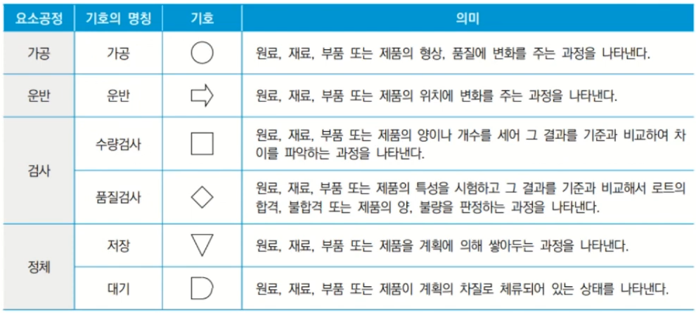
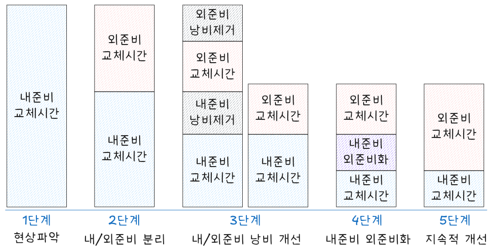

flowchart TB 0[준비작업 낭비] --- 1[내준비교체<br>작업 낭비] & 2[외준비교체<br>작업 낭비] 1 --- 11[**교환 낭비**] & 12[**조정 낭비**] 2 --- 21[사전 **준비 낭비**] & 22[후처리 낭비]
프로세스 분석과 개선
Keywords
공정분석, 공정개선, 공정기호, 라인 밸런싱, 준비교체, Less Engineering, 3정 5S
공정기호
공정분석(Operations analysis)은 작업 효율성을 높이기 위해 생산 과정과 작업 흐름을 평가하는 과정이다.
공정분석을 위해 사용되는 공정기호(Flowchart symbols)는 작업 흐름을 시각적으로 나타내기 위한 기호로, 각 단계 작업이나 활동을 명확하게 표현하는데 사용된다. 이러한 기호는 작업 분석, 개선 그리고 최적화 작업을 효과적으로 수행할 수 있게 도음을 준다.

https://youtu.be/RXpHGa9ToAE?si=DWZPs-bZQBpXmd3P
아래는 공정기호를 이용한 공정도표 작성 예제이다.

http://business.chosun.ac.kr
라인 밸런싱
라인 밸런싱은 공정 분석에 있어 중요한 요소이다. 작업장 내 여러 작업 사이에 균형을 맞추는 활동이다. 이는 각 작업이 동일한 시간 동안 수행되도록 하여 전체 라인 효율성을 높이는데 목표를 두고 있다. 라인 밸런싱을 통해 생산 시간을 줄이고 병목 현상을 방지하며 자원 활용을 최적화할 수 있다.
라인 밸런스 효율은 다음과 같이 계산할 수 있다.
\[ E_b = \frac{\sum{T_i}}{n \times c_T} \tag{23.1}\]
- \(\sum{T_i}\): 각 공정 작업시간 합계
- \(n\): 공정 수
- \(c_T\): 공정 중 최대 작업시간
준비교체 개선활동
준비교체 시간이란 현 제품 생산 종료 시점으로부터 다음 제품으로 교체/조정을 하여 완전히 양품이 생산되기까지의 시간을 말한다. 치공구 해체, 청소, 다음 제품에 사용할 치공구 준비, 금형류 준비, 세팅, 시가공, 조정, 측정 시간 등을 포함한다.
- 준비교체 시간 단축 필요성
- 시장 요구에 맞춰 다품종화 되면서 가동률이 저하되는 추이를 보였다. 빈번한 기종 교체에 대응 및 준비 교체 시간 단축으로 가동률 향상을 위해 준비교체 시간 개선이 필요하게 되었다.
준비교체시 발생하는 3대 낭비는 다음과 같다.
내준비 시 교환 낭비, 조정 낭비가, 외준비 시 준비 낭비 발생한다.
- 교환 낭비
-
- 치공구 교환, Press 금형/성형 등 금형 준비, Drill 등 교환
- 조립라인의 조립품이나 부품 교체, 가공라인의 재료 교체 준비
- 조정 낭비
-
- 정밀 절삭 가공이나 화학 장치 등에서 기준을 변경 및 조정하는 작업
- 준비 작업자 테크닉을 발휘할 수 있는 조정 작업
- 준비 낭비
-
- 생산 시작 전에 여러 가지 준비 작업
- 작업자나 기계 준비, 도면 확인, 청소 등 후처리를 포함

- 개선 절차
-
- 현상 파악
- 가동 분석을 통해 현 실태를 파악하고 현재 실시하고 있는 방법을 분석한다.
- 내/외 준비 분리
- 내준비, 외준비, 로스 분리를 명확히 한다. 반드시 설비를 정지시키지 않아도 가능한 작업은 외 준비로 한다.
- 낭비제거
- 정리 정돈으로 상당한 시간을 줄일 수 있다.
- 내준비를 외준비화
- 내준비 작업을 개선하여 외준비화 한다.
- 내준비 단축을 위해 지그 공구 부착, 제거 작업 간소화/표준화, 카세트 방식 도입, 빠른 잠금장치를 이용한 체결 간소화, 중개 지그 활용, 병행 작업 실시, 조정 작업 폐지 등을 시도한다.
- 외준비 교체 및 지속적 개선
- 외준비 시간도 단축하여 준비교체 총 시간을 단축한다.
- 현상 파악
준비교체 시간 단축은 로트 사이즈를 작게 하여 고객 요구에 맞는 생산 진행으로 재고를 줄이고 리드타임을 단축하여 시장 경쟁력을 향상시킬 수 있다.
- 단축효과
-
- 재공품(WIP, Work In Process) 최소화 - 대기시간 단축
- 생산 소요시간(Lead time) 단축 - Lead time = 가공 + 정체시간
- 가동률 및 생산성 향상(준비 교체 유실 감소)
- 교체준비 시간 단축 추진 절차
-
- 준비 시간 실태 파악
- 준비 개선 추진팀 편성
- 현장 관찰 및 가동 분석
- 헛수고 없애기와 결론 발상법
- 개선 실시 계획 작성
- 개선 실시
- 평가결과 횡전재
Less Engineering
Less Engineering은 불필요한 엔지니어링 작업을 최소화하고, 꼭 필요한 기술적 개선에 집중하는 접근 방식이다. Lean Manufacturing과 Agile 개발 원칙에서 파생된 개념으로, 복잡성을 줄이고 낭비를 최소화하여 효율적인 제품 개발 및 생산을 목표로 한다.
- 핵심 원칙
-
- 필요한 것만 설계
- 과도한 기능이나 불필요한 설계를 배제하고, 최소한의 엔지니어링으로 목표 달성
- 단순한 해결책 우선
- 복잡한 설계보다 검증된 간단한 솔루션을 먼저 고려
- 반복적 개선(Iterative Improvement)
- 한 번에 완벽한 설계를 만들려 하지 않고, 지속적인 피드백을 통해 점진적 개선
- 표준화된 설계 활용
- 기존의 표준 부품과 검증된 설계를 적극 활용하여 개발 속도를 높이고 오류를 줄임
- 필요한 부분에만 엔지니어링 자원 집중
- 가치가 높은 영역에 엔지니어링 리소스를 집중 배치
- 적용 효과
-
- 개발 속도 향상
- 불필요한 작업을 줄여 제품 개발 및 개선 시간을 단축
- 비용 절감
- 불필요한 연구, 개발, 프로토타이핑 비용 절감
- 유지보수 용이
- 단순한 설계는 문제 해결과 유지보수를 쉽게 함
- 생산 효율 향상
- 제조 공정에서도 불필요한 복잡성을 제거하여 생산성을 높임
Less Engineering은 “적을수록 더 좋다(Less is More)”는 원칙을 따르며, Lean Thinking과 Agile 개발 방식에서 중요한 역할을 한다.
다음은 Less Engineering 유형이다.
- Walk Less - 보행 낭비 없애기
- Search Less - 찾는 낭비 없애기
- Air Less - 빈 공간 없애기
- Over stock Less - 과잉 재고 없애기
- Air Cut Less - 공구 절삭 낭비 없애기
- Conveyor Less - 불필요한 컨베이어 없애기
- Dust Less - 분진방지, 먼지 발생 원인 없애기
- Rough Motion Less - 불필요한 동작 없애기
| 구분 | 예시 |
|---|---|
| Man | - Walk Less: 작업자의 낭비 보행을 없앤다. |
| - Search Less: 물품을 찾는 시간적 낭비를 없앤다. | |
| - Rough Motion Less: 동작의 원칙에 벗어난 움직임을 없앤다. | |
| Machine | - Dust Less: 분진을 발생시키는 기계나 장비의 원인을 없앤다. |
| - Conveyor Less: 불필요한 컨베이어를 없앤다. | |
| Material | - Material Less: 원재료 사용의 낭비를 없앤다. |
| Method | - Air Less: 부가가치를 낳지 않는 공간을 없앤다. |
| 사례 | 설명 | 효과 |
|---|---|---|
| MVP 개발 (Minimum Viable Product) | 제품의 핵심 기능만 포함하여 시장 반응을 테스트한 후 점진적으로 개선 | 개발 비용 절감, 빠른 시장 출시 |
| 자동차 플랫폼 공유 | 동일한 차체(플랫폼)를 여러 모델에서 활용하여 개발 비용 절감 | 생산 효율성 증가, 품질 향상 |
| Lean 생산 방식 (Toyota) | 불필요한 설계 요소를 제거하고 단순한 공정으로 제품 생산 | 낭비 최소화, 생산 속도 향상 |
| 스타트업의 반자동 공정 활용 | 완전 자동화 대신 사람이 개입할 수 있는 반자동 시스템 도입 | 초기 투자 비용 절감, 유연한 운영 |
| 애자일 개발 방식 | 소프트웨어를 한 번에 완성하지 않고 반복적인 개선 과정을 통해 최적화 | 빠른 피드백 반영, 유지보수 용이 |
Less Engineering은 불필요한 엔지니어링을 줄이고 핵심 요소에 집중하여 효율성을 극대화하는 전략이다.
3정 5S
3정 5S는 제조업 및 생산 관리에서 작업 환경을 정리하고 효율성을 극대화하는 기본 개념으로, 정리(整理), 정돈(整頓), 청소(清掃), 청결(清潔), 습관(習慣)을 강조하는 관리 기법이다.
3정(三定)
“정해진 것을, 정해진 위치에, 정해진 양만큼 둔다”는 원칙으로, 업무 효율성을 높이고 낭비를 줄이기 위해 사용됨.
| 구분 | 설명 |
|---|---|
| 정품(定品, 정해진 물건) | 필요한 물건만 사용하고 불필요한 것을 제거 |
| 정량(定量, 정해진 수량) | 필요한 만큼만 보관하여 과잉 재고나 부족 문제 방지 |
| 정위치(定位置, 정해진 위치) | 물건을 사용하기 쉽도록 일정한 위치에 배치 |
5S 활동
일본에서 시작된 작업장 정리·정돈 기법으로, 낭비를 없애고 생산성을 향상시키는 데 초점을 둔다.
| 구분 | 일본어 | 의미 | 설명 |
|---|---|---|---|
| 정리(整理) | せいり (Seiri) | 불필요한 것 제거 | 작업 공간에서 필요 없는 물건을 제거 |
| 정돈(整頓) | せいとん (Seiton) | 필요한 것 정리 | 필요한 물건을 사용하기 쉽게 정리·배치 |
| 청소(清掃) | せいそう (Seisou) | 깨끗하게 유지 | 작업장을 청결하게 유지하고 점검 |
| 청결(清潔) | せいけつ (Seiketsu) | 위생적인 환경 | 정리·정돈·청소를 습관화하여 유지 |
| 습관(習慣) | しゅうかん (Shuukan) | 지속적 실천 | 5S 활동을 반복하여 문화로 정착 |
- 3정 5S의 효과
-
- 작업 효율성 향상: 필요한 물건을 빠르게 찾을 수 있어 생산성 증가
- 안전한 작업 환경 조성: 정리·정돈을 통해 사고 위험 감소
- 낭비 최소화: 불필요한 물건 제거로 공간과 비용 절감
- 품질 향상: 깨끗한 환경 유지로 제품 품질 안정
- 작업 효율성 향상: 필요한 물건을 빠르게 찾을 수 있어 생산성 증가
3정 5S는 공장뿐만 아니라 사무실, 창고, 서비스 업종 등 다양한 분야에서 활용되며, 지속적인 실천이 중요한 관리 기법이다.
참고자료
각주